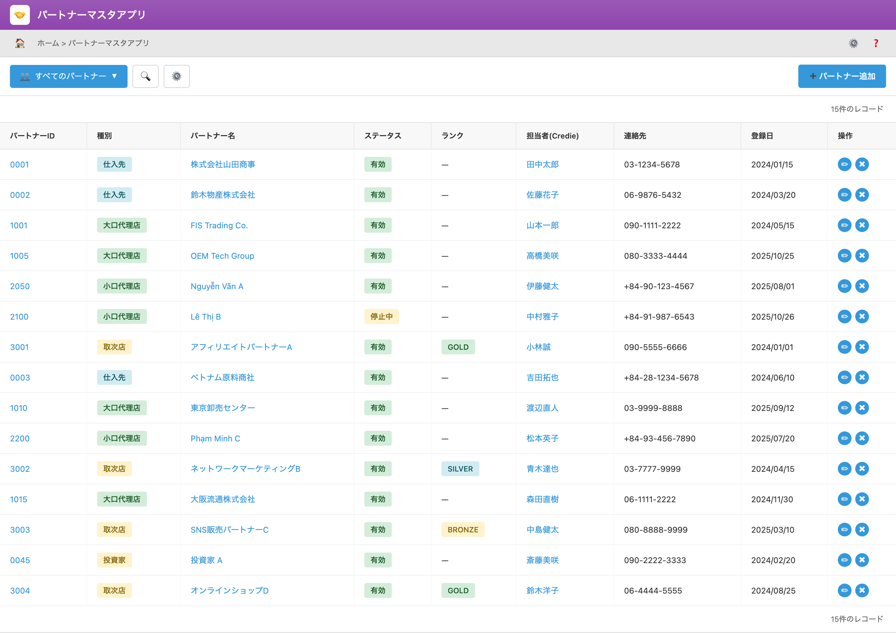

UI Spec
Partner Master
Version 1.0
パートナーマスタ / Partner Master – UI 画面仕様書
対象画面: Partner Master（一覧・新規作成・編集）
想定利用者: 管理者・営業担当・運用担当・経理
1. 画面の目的（ビジネス上の役割）
Partner Master は、Credie内の 代理店、アフィリエイト、販売パートナー、投資家 を一元管理するための基本マスタです。
本画面の情報は、以下の業務ロジックに直接影響します。
- Reward / 配当計算（Affiliate・Agency・Investor）
- 支払管理（AP） / 銀行振込先の管理
- アカウント管理（Portal Login / Agency Dashboard）
- 販売管理、紹介経路のトラッキング
本マスタは Credie における Partner に関する唯一の情報源（Single Source of Truth） です。
2. ユーザーストーリー（User Scenarios）
- 営業担当が新しい代理店（Agency）を登録し、報酬レートと担当者を設定する。
- 運用担当がアフィリエイトの銀行口座情報を確認し、月次支払を行う。
- 経理チームが Investor の配当支払先を確認し、AP フローに連携する。
- 管理者が Partner の稼働状況（Active / Pause / Retired）を管理する。
3. Scope / Out of Scope
3.1 Scope（今回含まれる範囲）
- Partner 基本情報管理（名称、住所、連絡先など）
- Partner Type に応じた追加情報管理
- Portal Login 情報登録
- 銀行口座情報の管理
- 税務情報（法人のみ）
3.2 Out of Scope（今回含まれない）
- 報酬計算ロジックそのもの
- Portal UI の仕様
- 支払実行（AP 実行）は Payment Request App にて管理
4. 一覧画面（List View）

図1. Partner Master 一覧画面
4.1 表示項目
| 項目名 |
説明 |
| Partner ID |
一意のID（自動採番） |
| パートナー名 |
法人名・個人名 |
| Partner Type |
代理店 / アフィリエイト / 投資家 / パートナー |
| ステータス |
Active、Pending、停止 など |
| 担当者 |
社内担当者 |
| 最終更新日 |
更新タイムスタンプ |
| 操作 |
編集 |
5. 新規作成 / 編集画面（Create / Edit Form）
5.1 共通で表示される入力項目（全 Partner Type 共通）
| 項目名 |
説明 |
| Partner Type（最重要） |
選択により以下のフォームが動的に変化する |
| ステータス |
Active / Pending / Pause / Retired |
| パートナー名 |
法人名 / 個人名 |
| 住所 |
所在地 |
| 担当者 |
社内担当者（Credie） |
| 電話番号 / メール |
基本連絡先 |
5.2 Partner Type による表示制御（最重要）
5.2.1 Partner Type = 代理店（AGENCY）
- ✔ 基本情報
- ✔ 代理店ランク（BRONZE / SILVER / GOLD / VIP）
- ✔ 代理店手数料（%）
- ✔ Portal Login 情報
- ✔ 法人情報（法人番号・税務情報など）
- ✔ 銀行口座情報
- ✖ Investor 配当情報は非表示
5.2.2 Partner Type = アフィリエイト（AFFILIATE）
- ✔ 基本情報
- ✔ Affiliate 手数料（%）
- ✔ Portal Login 情報
- ✔ 銀行口座情報
- ✖ 法人情報は不要 → 非表示
- ✖ Investor 配当情報は非表示
5.2.3 Partner Type = パートナー（PARTNER）
- ✔ 基本情報
- ✔ 販売契約に関するメモ（任意）
- ✔ 銀行口座情報（必要に応じて）
- ✔ Portal Login（任意）
- ✖ ランク / 手数料不要
5.2.4 Partner Type = 投資家（INVESTOR）
- ✔ 基本情報
- ✔ 投資額（任意）
- ✔ 配当支払先（銀行口座）
- ✔ 配当サイクル（四半期 / 年次）
- ✖ Portal Login は不要 → 非表示
- ✖ ランク / 手数料ブロック非表示
- ✖ 法人情報は任意
6. Business Impact（本マスタが影響する業務）
- 支払い依頼（AP）の振込先を本マスタから取得
- Affiliate / Agency の報酬計算に影響（レート・ランク）
- Investor の配当計算に影響
- Portal Login アカウント管理に影響
7. お客様に確認いただきたい点
- Partner Type に応じた表示項目は運用ルールに合っていますか？
- 代理店 / アフィリエイト / 投資家の項目の粒度は十分ですか？
- 銀行口座形式は日本国内で問題ありませんか？
- Portal Login（必要 / 不要）の判断は適切ですか？